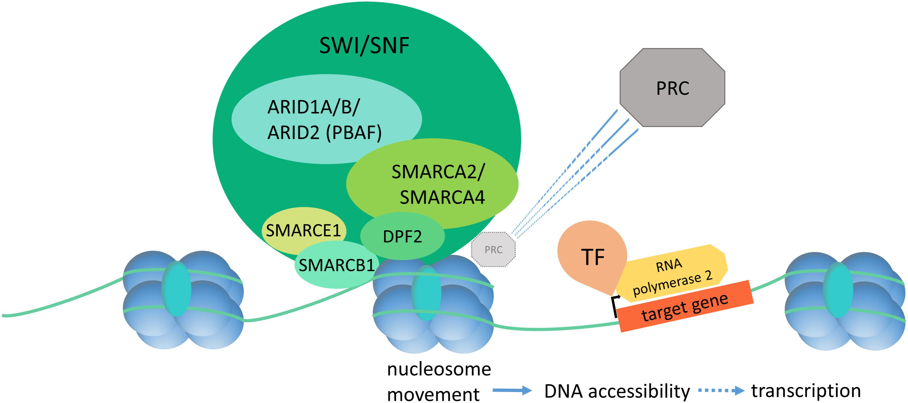
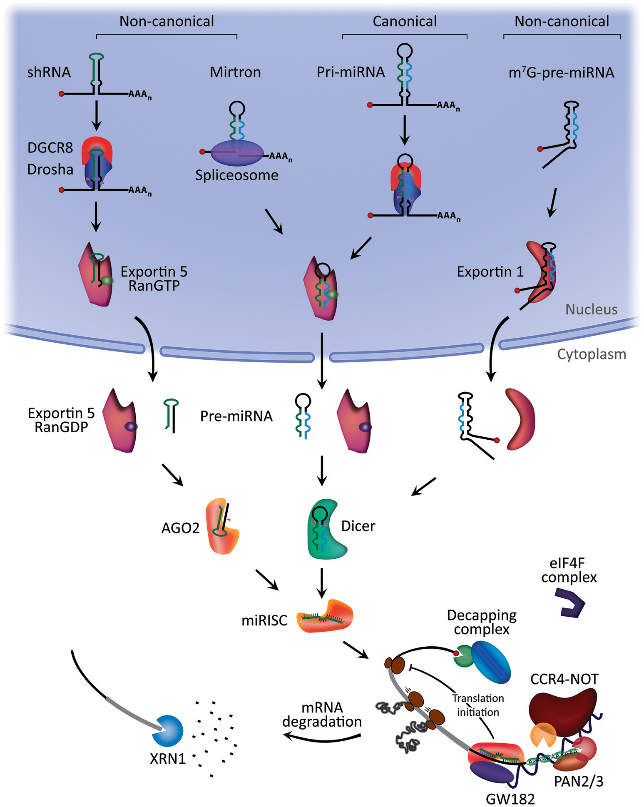

Our research.
From genetic events to cancer progression and targeted therapies.
The overarching theme of our research program is to elucidate the mechanisms by which specific genetic events occur in a permissive cell context to drive malignant transformation and subsequent progression to a poorly differentiated and highly aggressive state. These insights inform the development of prevention and targeted therapeutic approaches.
We focus on hard-to-treat cancers affecting women and children, such as gynecologic cancers and pediatric sarcomas driven by mutations in genes encoding subunits of the SWI/SNF chromatin remodeling complex or DICER1.
SWI/SNF chromatin remodeling & gene regulation

Chromatin remodeling changes DNA accessibility and helps regulate gene transcription.
DICER1 in microRNA biogenesis

Dicer processes precursor microRNAs into duplexes that contribute to microRNA-mediated gene regulation.
Decoding cancer development trajectory
We use a combination of patient specimens, cell lines, 3D organoid cultures, and genetically engineered mouse models alongside multi-omics analysis to identify biomarkers for risk stratification, detail the tumor development trajectory of SWI/SNF-mutant or DICER1-mutant patient tumors, and recapitulate the development of these malignancies from their putative cells of origin.
Key publications
Chae Young Shin, Bengul Gokbayrak, Valerie L Tao, Noorah Almadani, Eunice Li, Rebecca Ho, Felix KF Kommoss, Jutta Huvila, Derek Chiu, Samuel Leung, Basile Tessier Cloutier, Jessica N. McAlpine, David G. Huntsman, C. Blake Gilks, Lien Hoang, Yemin Wang. Molecular subtypes and SWI/SNF protein expression in dedifferentiated/undifferentiated endometrial carcinoma. Histopathology, Jan 15, 2025. https://doi.org/10.1111/his.15411. PMID: 39811899
Eunice S. Li, Rebecca Ho, Ran Tao, Yannes W. Choi, Chae Young Shin, Shary Y. Chen, Bengul Gokbayrak, Janine Senz, Betty Yao, Liam Johnston, Spencer D. Martin, Eric Yang, Mark Carey, Bryan T. Hennessy, David G. Huntsman, Ramon I. Klein Geltink, Lynn Hoang, Yemin Wang. Molecular subtyping of endometrial carcinoma cell lines uncovers subtype-specific targetable vulnerabilities. NPJ Precis Oncol. 2025 Jul 24;9(1):254. https://doi.org/10.1038/s41698-025-01053-x. PMID: 40707668.
Giulio Aceto, Kexin Liu, Azadeh Arabzadeh, Shuhe Tsai, Yibo Xue, Anie Monast, Virginie Pilon, Mengke Han, Geneviève Morin, Kitty Pavlakis, Lili Fu, Morag Park, William D. Foulkes, Yemin Wang§ and Sidong Huang§. SMARCA4 loss reprograms p300 chromatin occupancy to subvert p53-mediated transcriptional repression in ovarian small cell carcinoma. Nature Communications 17, 7523 (2026). https://doi.org/10.1038/s41467-026-74204-8. PMID: 42297809 §co-corresponding
Felix K.F. Kommoss, Joyce Yu Han Zhang, Branden J. Lynch, Shary Yuting Chen, Janine Senz, Yana Moscovitz, Lesley A. Hill, Ding Ma, Wilder Scott, Jonathan Bush, Kenneth S. Chen, Andrew Roth, Andreas von Deimling, William D. Foulkes, Gregg B. Morin, T. Michael Underhill, Yemin Wang#, David G. Huntsman#. Spatial single cell transcriptomic analysis informs tumor developmental hierarchy of DICER1 syndrome related sarcoma. Nature Communications. 17, 4608 (2026). https://doi.org/10.1038/s41467-026-70971-6. PMID: 41912509. #co-corresponding
Wang Yemin*, Chen SY, Ta M, Senz J, Tao LV, Thornton S, Tamvada N, Yang W, Moscovitz Y, Li E, Guo J, Shen C, Douglas JM, El-Naggar AM, Kommoss FKF, Underhill TM, Singh N, Gilks CB, Morin GB, Huntsman DG*. Bi-allelic mutations of Dicer1 in the gynecologic tract of mouse drives lineage specific development of DICER1 syndrome-associated cancer. Cancer Research. 2023 Nov 1; 83 (21): 3517-3528. doi: 10.1158/0008-5472.CAN-22-3620. PMID: 37494476. * co-corresponding
Identifying targetable vulnerabilities and candidate therapeutic approaches
Utilizing genetic screens, we aim to identify novel therapeutic targets for drug development. Through screening FDA-approved drug candidates and other drug libraries, we identify candidates for drug repurposing. We also develop patient-derived xenograft models for validating our findings.
Key publications
Eunice S. Li, Rebecca Ho, Ran Tao, Yannes W. Choi, Chae Young Shin, Shary Y. Chen, Bengul Gokbayrak, Janine Senz, Betty Yao, Liam Johnston, Spencer D. Martin, Eric Yang, Mark Carey, Bryan T. Hennessy, David G. Huntsman, Ramon I. Klein Geltink, Lynn Hoang, Yemin Wang. Molecular subtyping of endometrial carcinoma cell lines uncovers subtype-specific targetable vulnerabilities. NPJ Precis Oncol. 2025 Jul 24;9(1):254. https://doi.org/10.1038/s41698-025-01053-x. PMID: 40707668.
Zhu X*, Fu Z*, Chen SY*, Ong D, Aceto G, Ho R, Steinberger J, Monast A, Pilon V, Li E, Ta M, Ching K, Adams B, Negri GL, Choiniere L, Fu L, Pavlakis K, Pirrotte P, Avizonis DZ, Trent J, Weissman BE, Klein Geltink RI, Morin GB, Park M, Huntsman DG, Foulkes WF, Wang Y§, Huang S§. Alanine supplementation exploits glutamine dependency induced by SMARCA4/2-loss. Nat Comm, 2023 May 20;14(1):2894. doi: 10.1038/s41467-023-38594-3. PMID: 37210563. §Co-corresponding
Jessica D. St. Laurent, Grace D. Xu, Alexander W. Ying, Bengul Gokbayrak, Ajinkya Patil, Joao A. Paulo, Kasey S. Cervantes, Shary Chen, William W. Feng, Akshay Sankar, Daniel D. Samé Guerra, Jun Qi, Dana S. Neel, Jason L. Hornick, David L. Kolin, Steven P. Gygi, David G. Hunstman, Yemin Wang, and Cigall Kadoch. Shifted assembly and function of mSWI/SNF family subcomplexes underlie targetable dependencies in dedifferentiated endometrial carcinomas. Nature Genetics. 57 2743-2755 (2025). https://doi.org/10.1038/s41588-025-02333-9. PMID: 41116019.
Wang Y*, Chen SY, Colborne S, Lambert G, Shin CY, Santos ND, Orlando KA, Lang JD, Hendricks WPD, Bally MB, Karnezis AN, Hass R, Underhill TM, Morin GB, Trent JM, Weissman BE, Huntsman DG*. Histone Deacetylase Inhibitors Synergize with Catalytic Inhibitors of EZH2 to Exhibit Antitumor Activity in Small Cell Carcinoma of the Ovary, Hypercalcemic Type. Mol Cancer Ther. 2018 Dec;17(12):2767-2779. doi: 10.1158/1535-7163.MCT-18-0348. Epub 2018 Sep 19. PMID: 30232145; PMCID: PMC6279577. * co-corresponding author